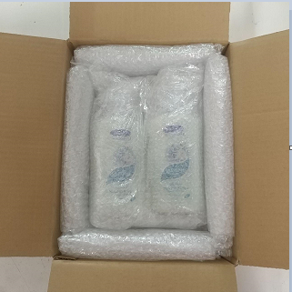
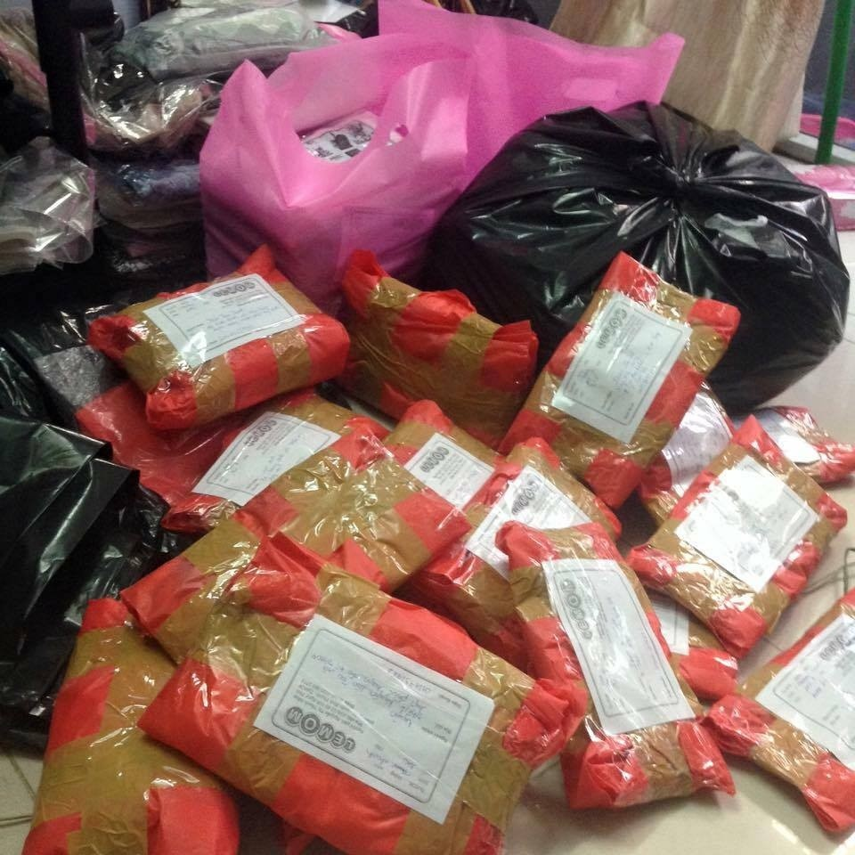
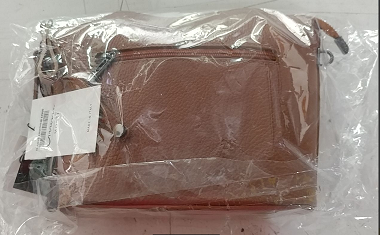
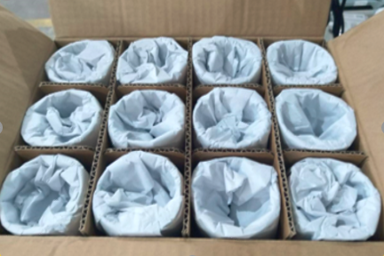

Quy định về Tiêu chuẩn đóng gói hàng hóa
I. Mục đích của việc ban hành tiêu chuẩn:
Quy định đóng gói được Công ty Cổ phần Vinacapital (sau đây gọi là BEST EXPRESS) đưa ra nhằm đảm bảo an toàn cho hàng hóa trong quá trình vận chuyển từ Người gửi tới Người nhận. Đóng gói đúng quy cách giúp bảo vệ hàng hóa, giảm tình trạng trả hàng, tiết kiệm chi phí cho Người gửi.
Khi có sự cố xảy ra trong quá trình vận chuyển, quy định đóng gói hàng hóa được lấy làm căn cứ quy chiếu trách nhiệm cho các bên liên quan.
II. Quy định đóng gói hàng hóa chung
- Tất cả các bưu kiện đều phải được đóng gói theo đúng quy định trước khi vận chuyển, BEST EXPRESS sau khi tiếp nhận hàng hóa sẽ chỉ chịu trách nhiệm vận chuyển hàng hóa theo nguyên tắc “nguyên đai, nguyên kiện, nguyên bao”, và chịu trách nhiệm theo quy định về đền bù hàng hóa của BEST EXPRESS
- BEST EXPRESS nhận vận chuyển hàng hóa có khối lượng tối đa là 80kg. Nếu sản phẩm nhỏ hơn 6 cm x 3 cm x 8 cm (tương ứng: dài x rộng x cao), Người gửi cần đóng gói sản phẩm vào phong bì để tránh thất lạc khi vận chuyển.
- BEST EXPRESS không nhận vận chuyển hàng nhiều kiện, mỗi bưu kiện phải có riêng một mã vận đơn. Trường hợp có nhiều mặt hàng nhỏ, cần phải đóng chung vào 1 kiện lớn duy nhất và đảm bảo an toàn theo tiêu chuẩn đóng gói trong quy định này.
- Hàng hóa đóng gói cần chịu được các tác động lực khi vận chuyển (xếp chồng, bốc vác, bê xếp…) và các tác động tự nhiên trong điều kiện môi trường bình thường (nhiệt độ, ánh sáng, độ ẩm).
- Khi đóng gói cần sử dụng vật nhồi chèn như giấy báo vò nhàu, hạt xốp hoặc giấy bọt khí (loại giấy có khả năng đàn hồi chống va đập cao) để chèn kín các khoảng trống, tránh sự chuyển động của hàng hóa bên trong hộp khi vận chuyển.
- Khi đóng gói sản phẩm phải đảm bảo không rơi sản phẩm ra khỏi bao bì trong quá trình vận chuyển (sử dụng băng keo để gói kín sản phẩm). Không được sử dụng dây thừng, dây vải để đóng gói sản phẩm.
- Với các mặt hàng dễ bị bẩn, ướt, cần đặt vào túi nylon dán kín bằng băng keo trước khi đóng gói.
- Tất cả các hóa đơn, chứng từ hay tài liệu hướng dẫn sử dụng cần để ở phía trong thùng hàng trước khi đóng gói, không dán bên ngoài thùng, ghi rõ nội dung (Ví dụ hóa đơn GTGT kèm số hóa đơn).
- Tất cả các bộ phận nhỏ hoặc các sản phẩm dạng hạt có thể bị đổ ra phải được đặt vào túi vải hoặc túi dệt plastic, rồi đóng gói hàng vào trong hộp cứng, sau đó đóng gói kín lại bằng băng keo.
- Đối với các hàng hóa có hình dạng đặc biệt hoặc khác thường, tối thiểu phải bao gói chống sốc hoặc bao bọc bằng giấy bìa cứng và dán băng keo cho tất cả các cạnh sắc nhọn hoặc lồi ra, đảm bảo sản phẩm không gãy khi chịu tác động và không làm thủng hoặc rách bao bì khi vận chuyển.
- Các hàng hóa đặc biệt như chất lỏng, hàng dễ vỡ, hàng dễ móp méo, dễ nóng chảy… phải được đóng gói cẩn thận và đáp ứng được với điều kiện vận chuyển. Những loại hàng hóa này phải được dán cảnh báo đặc biệt ở ngoài thùng hàng.
- Trên bao bì tất cả các bưu kiện cần có Mã vận đơn của đơn hàng, BEST EXPRESS yêu cầu khách hàng điền thêm:
1. Thông tin Khách hàng, bao gồm: Tên đầy đủ, số điện thoại, địa chỉ của người gửi và người nhận, thời điểm chấp nhận nhận bưu gửi.
2. Ghi chú hàng dễ vỡ hoặc không vận chuyển được bằng đường hàng không (nếu có ít nhất 01 sản phẩm trong bưu kiện thuộc sản phẩm không thể vận chuyển bằng đường hàng không), khuyến cáo đối với hàng hóa cần điều kiện đặc biệt để vận chuyển.
III.Quy định đóng gói chi tiết các mặt hàng thông dụng:
1. Hóa mỹ phẩm
- Hàng mỹ phẩm dạng chai lọ phải được bịt kín và dán kín nắp sản phẩm, đặc biệt phần nắp của các chai + chai dạng mỏ vịt cần cuộn để thành 1 khối có kích thước tương đồng với thân chai cố định đảm bảo chất lỏng không bị chảy ra ngoài (kể cả khi dốc ngược chai lọ).
Hình 1. Bịt kín và dán kín nắp chai.
- Bên ngoài sản phẩm được bọc kín được cuốn từ 3-4 lớp chống sốc (lưu ý với những chai mỹ phẩm dạng serum đựng bằng thủy tinh cần đóng gói chặt và kỹ hơn) cố định bằng băng dính, có chèn vật liệu chống va đập hoặc chống thấm nước (như xốp hoặc mút, hạt xốp, bubble, xốp mềm) giữa sản phẩm và hộp carton 3 lớp để lấp đầy khoảng không trong hộp tránh bị xê dịch và chịu được áp lực trong quá trình vận chuyển.

Hình 2. Bọc kín sản phẩm bằng bubble.
Hình 3. Chèn lót sản phẩm trong hộp carton.
2. Đồ thủy tinh, gốm sứ, hàng dễ vỡ
- Các sản phẩm bằng chất liệu: nhựa mỏng, thủy tinh, pha lê, sành, sứ, gốm, đất nung, thạch cao, sản phẩm chứa chất lỏng bên trong, v.v… khi vận chuyển sẽ có rủi ro rất lớn nếu không có chế độ cảnh báo và vận chuyển riêng. Do vậy, BEST EXPRESS có quyền từ chối hỗ trợ vận chuyển nếu đánh giá đơn hàng có rủi ro lớn khi vận chuyển hoặc do đối tác vận chuyển không đáp ứng được điều kiện để vận chuyển bưu kiện dễ vỡ.
- Nếu Người gửi vẫn mong muốn bán các sản phẩm này và yêu cầu BEST EXPRESS hỗ trợ vận chuyển, thì trách nhiệm gói bọc đảm bảo an toàn, cảnh báo bên ngoài kiện hàng và trách nhiệm rủi ro vận chuyển nếu xảy ra bể vỡ, hỏng hóc hoàn toàn thuộc về Người gửi.
- Sử dụng giấy bọt khí bọc kín mọi góc cạnh của sản phẩm từ 3 - 4 lớp.

Hình 4. Bọc kín sản phẩm bằng bubble.
- Đóng gói bằng hộp gỗ, phải chèn các vật liệu (như xốp hoặc mút, hạt xốp, bubble, xốp mềm) kín 6 mặt để đảm bảo hàng hóa không xê dịch và chịu được áp lực khi vận chuyển. Ở ngoài phải dán cảnh báo “hàng dễ vỡ”.
Hình 5. Đóng gói bằng hộp gỗ và chèn các vật liệu chống sốc.

Hình 6. Dán tem cảnh báo hàng dễ vỡ.
- Hàng hóa dễ vỡ dùng 02 lần hộp phải có lớp xốp bọc quanh bên ngoài hộp nhỏ.

Hình 7-8. Bao quanh bên ngoài hộp nhỏ bằng bubble và cố định hộp nhỏ trong hộp lớn.
3. Đồ điện tử, điện lạnh, đồ công nghệ
- Với đặc thù dễ hư hại nếu gặp môi trường có độ ẩm cao, trong quá trình bốc vác, di chuyển, các mặt hàng điện tử cần phải được đóng gói kỹ bằng các loại vật liệu chống va đập và chống ẩm (giấy bọt khí, mút mềm, mút xốp, nilon…), chèn lót xung quanh để không bị xê dịch khi vận chuyển.
- Người gửi phải ốp xốp mềm 06 mặt bên ngoài sản phẩm, lớp xốp cuốn yêu cầu độ dày là 2.5cm; sau đó, sử dụng giấy bọt khí bọc quanh lớp xốp đó ít nhất 02 lớp, dùng băng dính cố định chặt các góc của sản phẩm.
- Người gửi cần đóng gói bằng mút xốp các mặt của sản phẩm (theo “Quy định ốp xốp” bên dưới), sau đó bọc bằng giấy bọt khí bên ngoài; đồng thời có thêm tem ghi chú “hàng dễ vỡ”.
- Quy định ốp xốp với hàng nội tỉnh: Sản phẩm có 2 mặt tiếp xúc lớn, cần bọc bên ngoài bằng bubble chống sốc, sau đó đóng gói bằng mút xốp vào 2 mặt có diện tích lớn nhất và quấn băng keo xung quanh để cố định mút xốp và bubble; đồng thời có thêm tem ghi chú “hàng dễ vỡ”. Sản phẩm có 04 mặt tiếp xúc bằng nhau, cần đóng gói bằng mút xốp ở cả 04 mặt, trừ 02 mặt bé hơn sau đó bọc bằng bubble bên ngoài; đồng thời có thêm tem ghi chú “hàng dễ vỡ”. Sản phẩm có 06 mặt tiếp xúc bằng nhau, cần đóng gói bằng mút xốp ở tất cả các mặt sau đó bọc bằng bubble bên ngoài; đồng thời có thêm tem ghi chú “hàng dễ vỡ”. Mút xốp đóng gói được yêu cầu độ dày là 2.5cm.

Hình 9. Ốp xốp 2 mặt có diện tích lớn nhất và bọc kín sản phẩm bằng bubble.
- Quy định ốp xốp với hàng liên tỉnh: Tương tự quy định đối với hàng nội tỉnh cộng thêm: Đóng gói bằng mút xốp bên ngoài 06 mặt của hộp sản phẩm. Mút xốp đóng gói được yêu cầu độ dày là ≥ 2.5cm.


Hình 10-11. Ốp xốp 6 mặt cho sản phẩm.
- Với đơn có từ 02 sản phẩm trở lên: Đóng gói đúng quy cách như trên cho từng hộp sản phẩm trong đơn hàng. Sau đó, cố định toàn bộ khối hàng bằng việc quấn quanh bằng băng keo. Cuối cùng là bọc bằng màng co bên ngoài khối hàng và dán tem nhãn dễ vỡ. Khối hàng thống nhất không có kích thước vượt quá trọng lượng và kích thước quy định.
4. Sách & Văn phòng phẩm
- Với hàng hoá dạng mảnh như tranh vẽ, bản đồ, sách, báo, tạp chí, catalog, tài liệu … và những đồ dễ rách nát cần được bảo vệ và bọc kín sản phẩm bởi 2 lớp nylon hoặc màng co nhằm tránh để sản phẩm bị bẩn, ẩm ướt.

Hình 12. Bọc màng co sản phẩm tránh bị bẩn, ẩm ướt.
- Sau đó đóng gói vào thùng carton cứng có hình dạng phù hợp, không quá lớn so với sản phẩm và quấn quanh bằng băng keo để tránh sản phẩm bị rơi ra ngoài khi vận chuyển.

Hình 13. Dán kín hộp carton bằng băng keo.
5. Thực phẩm khô
- Các mặt hàng thực phẩm khô cần được đóng gói bằng nhiều lớp nylon hoặc giấy bọt khí (từ 2 đến 3 lớp) và cố định bằng băng dính, phải đảm bảo kiện hàng kín, có khả năng chống ẩm và chống va đập (với thực phẩm dễ vỡ vụn), hút chân không để không ảnh hưởng chất lượng thực phẩm sau quá trình vận chuyển.
- Quấn kỹ kiện hàng để tránh phát ra mùi thu hút động vật/côn trùng trước khi đóng hộp carton cứng.
- BEST EXPRESS chỉ bảo quản đơn hàng ở điều kiện thông thường, không chịu trách nhiệm bồi thường đối với các mặt hàng có điều kiện bảo quản riêng.
6. Chất lỏng (dầu ăn, nước giặt/xả, dầu gội…)
- Mỗi sản phẩm cần được bịt kín miệng chai với băng dính/nylon/màng bọc thực phẩm, sau đó quấn bubble chống sốc 02 lớp xung quanh sản phẩm.

Hình 14. Bọc kín miệng chai và bọc xung quanh sản phẩm.
- Đựng sản phẩm trong hộp carton, chèn mút xốp đủ 06 mặt xung quanh giữa hộp bìa carton và sản phẩm.
Hình 15. Chèn mút xốp xung quanh sản phẩm.
- Nếu có từ 02 sản phẩm trở lên, giữa các sản phẩm cần có mút xốp chèn ở giữa.
7. Quần áo, giày túi, bỉm tã
- Nếu sản phẩm không có hộp carton bên ngoài, phải đóng gói thêm một lớp bubble trước khi cho sản phẩm vào túi nylon thường và dùng băng keo bọc kín gói hàng.
- Các sản phẩm như quần áo, giày dép cần được gấp gọn trước khi đóng gói, quấn quanh sản phẩm từ 2 -3 lớp nylon hoặc màng co, sau đó cố định toàn bộ bằng băng keo để tránh rủi ro khi điều kiện thời tiết khách quan xảy ra.
Hình 16. Quấn quanh sản phẩm bằng nylon và cố định bằng băng keo.
- Các sản phẩm như giày, dép, túi xách bắt buộc phải có hộp carton bên ngoài sau khi đã cuốn 2- 3 lớp nylon.
Hình 17. Bao bọc quanh sản phẩm bằng nylon.

Hình 18. Cho sản phẩm vào hộp carton và chèn cố định sản phẩm.
- Trong trường hợp cần bảo quản cả hộp sản phẩm từ nhà sản xuất cần đóng gói bằng mút xốp 6 mặt hộp sau đó cố định toàn phần bằng băng keo và đặt trong hộp carton cứng.

Hình 19. Đóng gói bằng mút xốp để bảo quản cả hộp sản phẩm từ nhà sản xuất.
8. Đồ gia dụng lớn
8.1 Hàng gia dụng (nhựa cứng)
- Sử dụng giấy bọt khí bọc kín mọi góc cạnh sản phẩm từ 3-4 lớp và cố định toàn phần bằng băng keo.

Hình 20. Bao bọc sản phẩm bằng bubble.
- Sau đó sản phẩm cần được đặt trong thùng carton có kích thước phù hợp, có chèn xốp cố định sản phẩm để tránh va đập gây hư hỏng trong quá trình vận chuyển.

Hình 21. Đặt vào thùng carton và cố định sản phẩm.
8.2. Hàng gia dụng (trừ hàng nhựa cứng, điện gia dụng): chảo, nồi kim loại…
- Người gửi cần đóng gói kín sản phẩm, sử dụng giấy bọt khí bọc quanh sản phẩm ít nhất 02 lớp, dùng băng keo cố định toàn phần, sau đó cho vào trong hộp carton và chèn chặt các góc bằng mút xốp mềm.

Hình 22. Đóng gói kín sản phẩm bằng màng co và bubble.
- Với mặt hàng “chảo” (sản phẩm có hình dạng dị thường): Dùng mút xốp lấp đầy lòng chảo (không dùng bubble/nylon, dễ bị trũng, dễ hư hỏng vành chảo). Sau đó dùng bubble quấn 5 lớp toàn bộ chảo (cả lòng chảo và tay cầm), cố định bubble bằng băng keo, cho vào hộp carton có kích thước vừa với sản phẩm, sau đó chèn lót cố định sản phẩm và quấn quanh mặt ngoài của hộp carton bằng băng keo.

Hình 23. Đóng gói sản phẩm có hình dạng “dị thường”.
Hình 24. Cố định sản phẩm trong hộp carton.
9. Hộp thiếc, hộp giấy cứng (sữa bột, sơn….)
- Các sản phẩm này cần được cố định từ 2-3 lớp màng co để cố dịnh phần nắp với thân sản phẩm sau đó được bọc 3-4 lớp chống sốc có cố định bằng băng keo.
- Sau đó sản phẩm được đặt vào hộp carton có chèn mút xốp mềm để đảm bảo lấp đầy khoảng trống giữa hộp carton và sản phẩm tránh gây va đập, hư hỏng sản phẩm khi vận chuyển.

Hình 25. Bọc kín sản phẩm bằng bubble và cố định sản phẩm trong hộp carton.
10. Xếp nhiều hàng hóa nhỏ trong cùng gói hàng
- Cần tách riêng và bọc từng mặt hàng riêng sau đó mới xếp vào thùng carton. Cuối cùng dán băng keo sao cho miệng của hộp carton phải kín. Các sản phẩm tách riêng cũng cần đóng gói theo đúng quy định đối với loại sản phẩm đó.
- Không để sát nhau, khoảng không giữa 2 vật cần được lấp đầy bởi các vật liệu chống va đập.
Hình 26. Xếp nhiều hàng hóa nhỏ trong một hộp carton.
11. Lưu ý quan trọng
- Kiện hàng sau khi đóng gói không được phát ra tiếng động khi di chuyển do không chèn đủ xốp và bubble.
--------HẾT -------